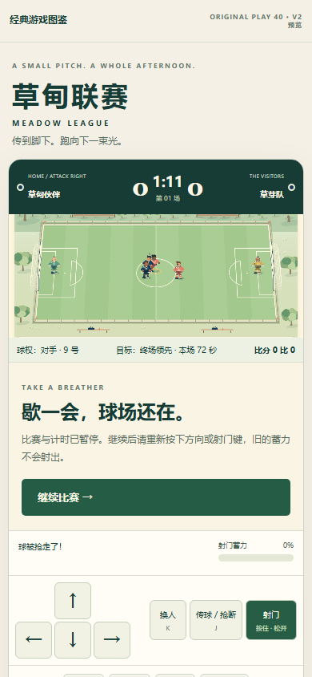
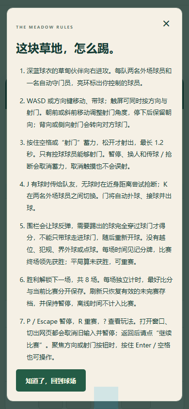
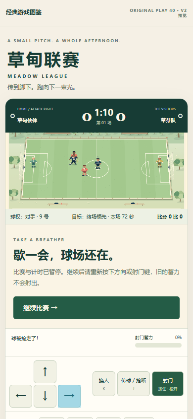
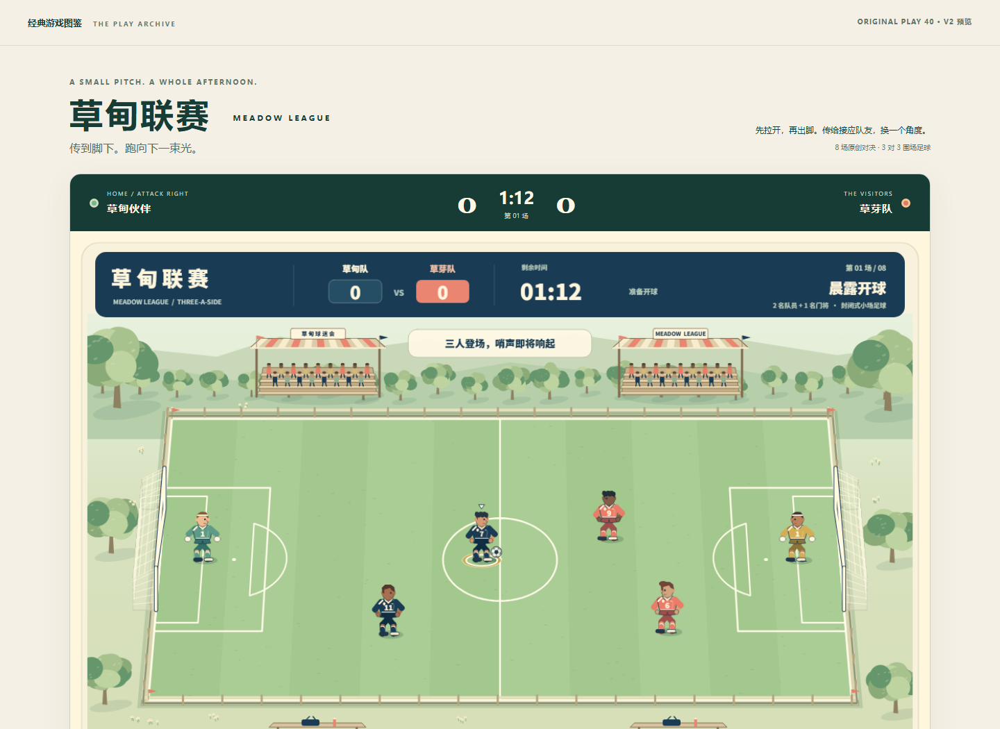
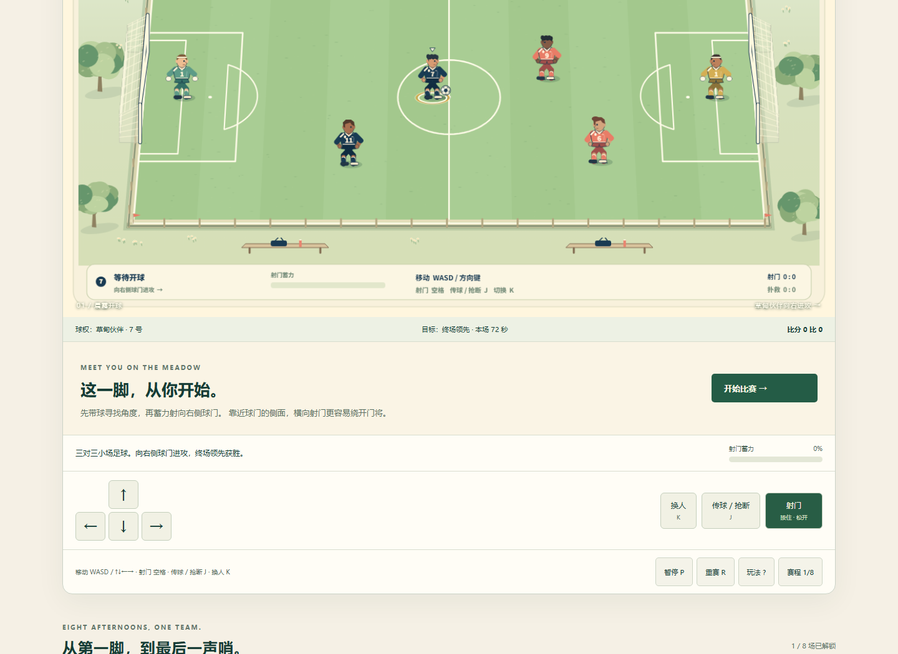
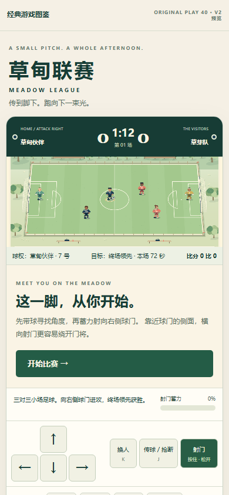

草甸联赛：首次开球与窄屏操作核查
操作、结论与边界 · 原始UI记录 · 打开游戏
meadow-01-ready meadow-02-start-paused
meadow-02-start-paused
meadow-03-help
meadow-04-touch-move-paused
meadow-desktop-initial
meadow-desktop-scroll-start
meadow-narrow-initial